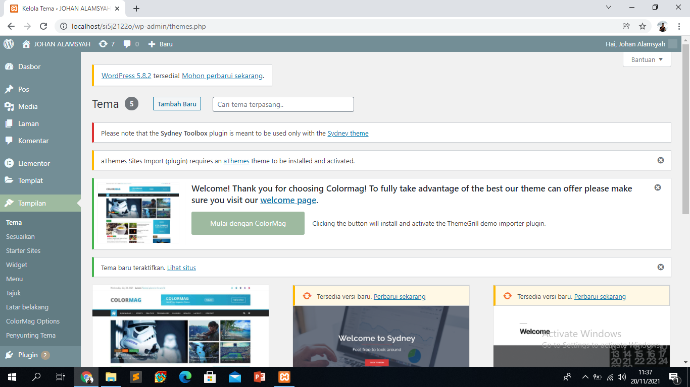
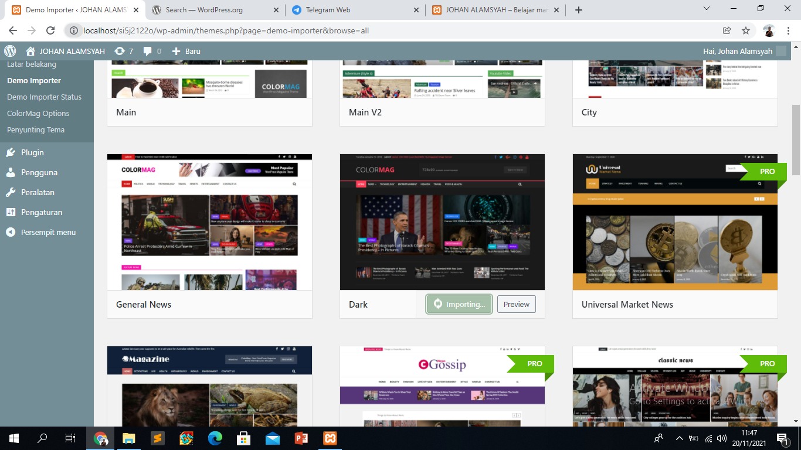
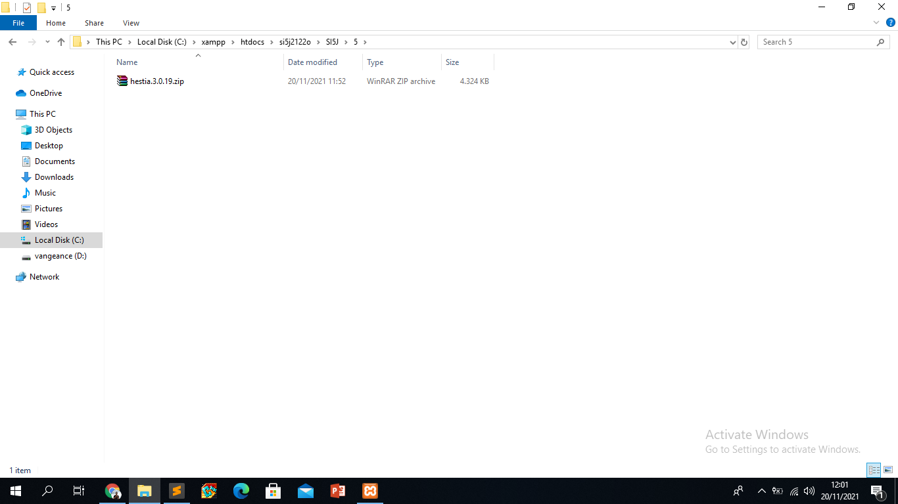
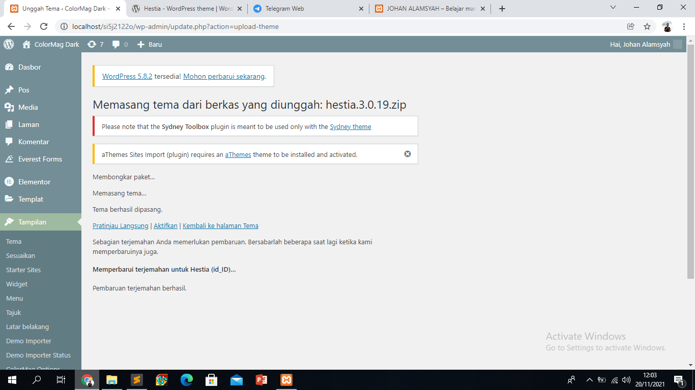
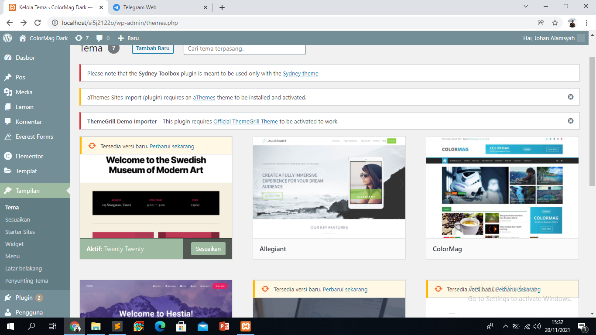
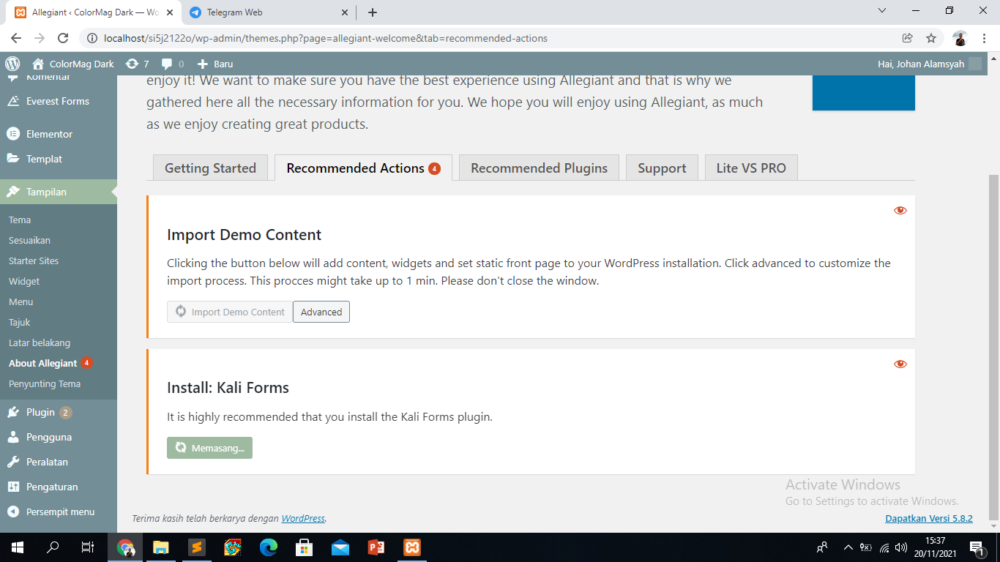
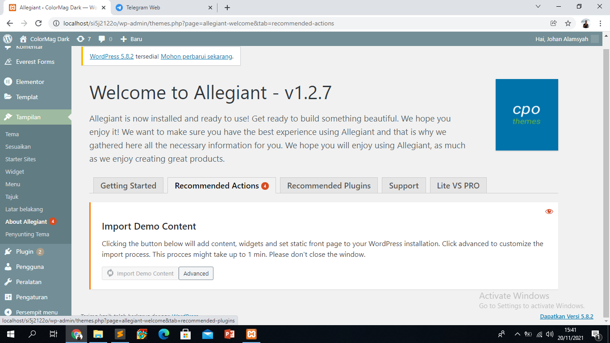
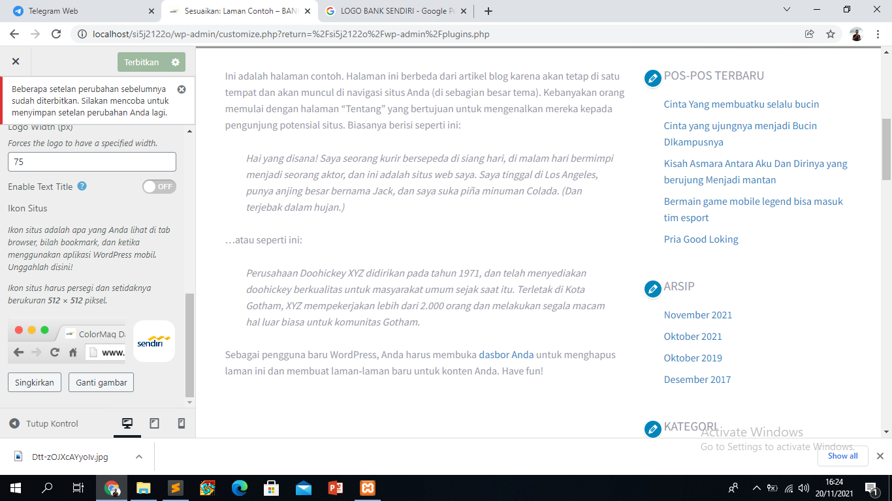
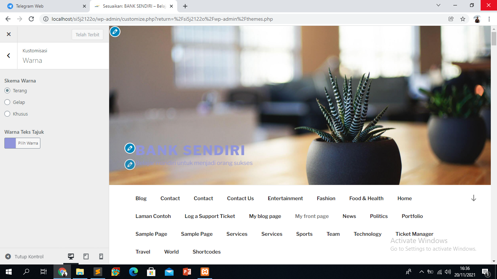
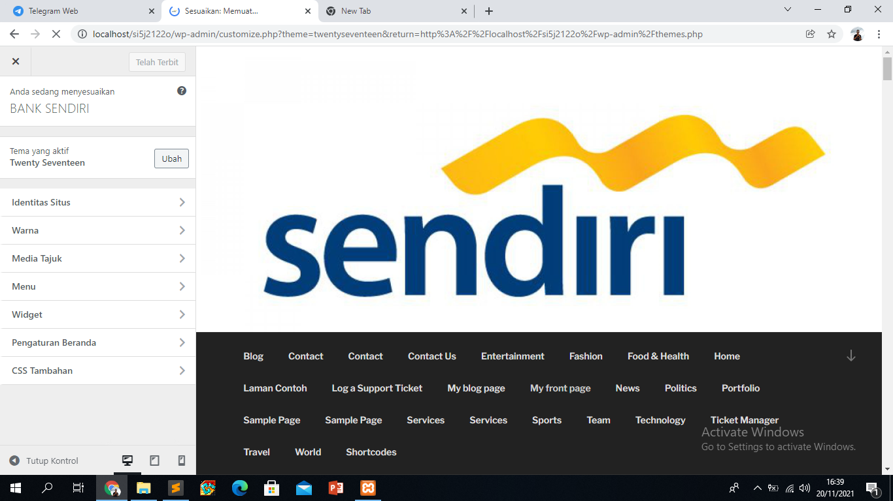

- NIM = 19222500193
- NAMA = Johan Alamsyah
- Kelompok = SI5J
kesimpulan atau hasil pertemuan 4 yang saya ambil adalah:
- Pertemuan 5
- dipertemuan kali ini kita menentukan tema dalam woodpress bisa diwoodpress.org untuk mendownload tema atau diwoodpress buka tampilan dan klik tema
- diwoodpress juga kita bisa mencari tema yang menarik untuk web kita
- kemudian kita klik sesuaikan kemudian kita klik identitas situs dan bisa pasang logo atau gambar yang kita inginkan diweb kita
- setelah itu kita bisa pasang gambar ikon situs untuk membuat web kita makin bagus setelah itu kita terbitkan
- kemudia warna untuk mengubah warna tampilan diweb kita
- kemudian kita memasang menu seperti blog,pos,home
- sekian terimakasih









